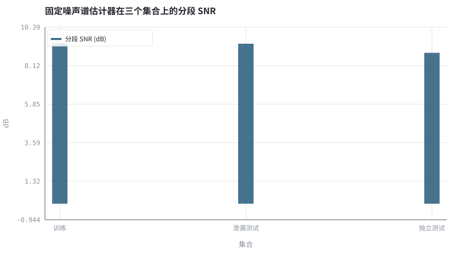
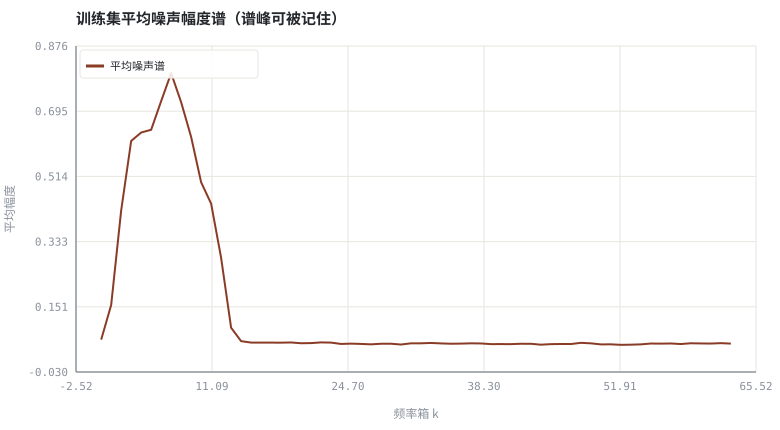

第 20 章训练数据合成：RIR、噪声、SNR 配比与数据泄漏
模型能力的一半来自数据；把「造数据」写成可复现、可审计的生成脚本。
本章位置：第 19 章 · 时频掩码：IBM / IRM / CRM 与监督学习形式化 定义了要学的映射，本章定义它的数据分布；第 21 章 · 网络骨架：DNN / CRN / U-Net / TCN / Conformer 给出拟合这个映射的网络骨架，第 30 章 · 泛化、鲁棒性与评测陷阱 把泄漏问题收进评测协议。
造训练数据就是写 property-based test 的生成器：每个随机源是独立的 generator，划分必须按 generator 的 id 而不是按样本下标。
- 能把 3A 训练对写成 clean / RIR / noise / SNR 的生成式模型。
- 能设计训练、验证、测试的划分规则并说明泄漏的来源。
- 能量化「测试集里出现训练集噪声」造成的分数虚高。
- 能列出至少四个数据增强轴与对应的评测维度。
§知识点地图
每个知识点都配了 1～2 个扩展学习链接；本章完整资源清单见 扩展学习。
| # | 知识点 | 扩展学习 | 状态 |
|---|---|---|---|
| 1 | 配对语料生成 | Microsoft DNS Challenge ↗ · LibriSpeech ↗ | 正文已覆盖 |
| 2 | RIR 与卷积 | The Scientist and Engineer's Guide to DSP ↗ · SciPy signal ↗ | 正文已覆盖 |
| 3 | 噪声库与 SNR 配比 | ffmpeg afftdn ↗ · Microsoft DNS Challenge ↗ | 正文已覆盖 |
| 4 | 数据增强轴 | Microsoft DNS Challenge ↗ · LibriSpeech ↗ | 正文已覆盖 |
| 5 | 训练/验证/测试划分 | Microsoft DNS Challenge ↗ · SpeechBrain ↗ | 正文已覆盖 |
| 6 | 说话人与房间解耦 | pyroomacoustics ↗ · The Scientist and Engineer's Guide to DSP ↗ | 正文已覆盖 |
| 7 | 数据泄漏 | Microsoft DNS Challenge ↗ · LibriSpeech ↗ | 正文已覆盖 |
| 8 | 可复现脚本 | Microsoft DNS Challenge ↗ · LibriSpeech ↗ | 正文已覆盖 |
§20.1一条生成式模型，四个随机源
y = s + h_far * x_far + v ，v ~ Noise(seed) ，SNR = 10log₁₀(Σs² / Σv²)
合成一对训练样本需要四个独立随机源：干净语音 s、远端语音 x_far、房间冲激响应 h、噪声 v。每个源都要有独立的种子空间：如果测试集与训练集共用同一批 RIR 或同一段噪声，模型等于见过答案，分数会虚高。
| 增强轴 | 取值范围示例 | 对应的评测维度 |
|---|---|---|
| SNR | -5 ~ 20 dB | 低信噪比鲁棒性 |
| 房间 T60 | 0.1 ~ 0.8 s | 混响泛化 |
| 噪声类型 | 平稳 / 键盘 / 音乐 / 街道 | 分布外泛化 |
| 电平与削波 | -30 ~ 0 dBFS，含非线性失真 | AGC 与非线性回声 |
| 设备响应 | 不同的麦克/扬声频响 | 跨设备泛化 |
§20.2泄漏比模型结构更致命
- 噪声泄漏：同一段噪声录音切两半分别放进训练与测试。
- 房间泄漏：同一条 RIR 出现在两个集合里，模型记住了混响尾。
- 说话人泄漏：同一说话人的不同句子被拆到两边，音色特征被记住。
- 时间泄漏： utterance 之间重叠，或按帧而不是按文件划分。
正确的划分单位是源文件 / 房间 / 说话人，而不是样本或帧。Microsoft DNS-Challenge 与 AEC-Challenge 的合成脚本都提供了可借鉴的划分协议；真实录音（DEMAND、MUSAN、LibriSpeech）与仿真 RIR 应分别管理清单。
用带 seed 依赖谱峰的合成噪声模拟「噪声类型」这一维度：泄漏测试集复用一条训练噪声，独立测试集使用完全不同 seed 的噪声。固定噪声谱估计器在泄漏集上占便宜，从而量化虚高幅度。
§Python 实验
实验 20-1 · 数据泄漏导致的分数虚高与谱峰对照
#!/usr/bin/env python3
# -*- coding: utf-8 -*-
"""合成带 seed 依赖谱峰的训练/测试集，量化噪声泄漏对固定噪声谱估计器的影响。
全部语音 / 噪声 / 房间冲激响应均为代码合成信号，仅用于教学演示机制与量级。
"""
from __future__ import annotations
import math
import pathlib
import random
import statistics
import sys
import time
_here = pathlib.Path(__file__).resolve()
for _p in _here.parents:
if (_p / "tools" / "dsp.py").exists():
sys.path.insert(0, str(_p / "tools"))
break
from dsp import (SAMPLE_RATE, fft, hann, stft, istft, magnitude_db, spectrum,
white_noise, tone, chirp, synthetic_speech, rir, convolve,
fft_convolve, delay, clip, normalize_peak, rms, rolling_rms,
smooth, db, energy_db, snr_db, erle_db, seg_snr_db,
scale_align, si_sdr_db, lufs_approx,
write_wav, read_wav, wav_info)
from chart import Chart, heatmap, BLUE, RED, GREEN, AMBER
FIG = _here.parents[1] / "fig"
AUDIO = _here.parents[1] / "audio"
FIG.mkdir(exist_ok=True)
AUDIO.mkdir(exist_ok=True)
random.seed(7)
# ---- 参数区 ----
N = 2000
N_FFT, HOP = 128, 64
N_TRAIN, N_TEST = 12, 6
SEED_TRAIN, SEED_LEAK, SEED_OOD = 1000, 1000, 2000
# ---- 计算与作图 ----
def make_noise(seed):
r = random.Random(seed)
f1 = 250.0 + 60.0 * (seed % 11)
f2 = 900.0 + 90.0 * (seed % 7)
a, b = tone(f1, N, amp=0.055), tone(f2, N, amp=0.045)
return [a[i] + b[i] + 0.008 * r.gauss(0, 1) for i in range(N)]
def make_pair(seed):
s = synthetic_speech(random.Random(seed + 50000), N)
v = make_noise(seed)
return s, v, [s[i] + v[i] for i in range(N)]
train = [make_pair(SEED_TRAIN + i) for i in range(N_TRAIN)]
leak = [make_pair(SEED_LEAK) for _ in range(N_TEST)]
ood = [make_pair(SEED_OOD + i) for i in range(N_TEST)]
acc = [0.0] * N_FFT
count = 0
for _s, v, _y in train:
for re, im in stft(v, N_FFT, HOP):
for k in range(N_FFT):
acc[k] += math.hypot(re[k], im[k])
count += 1
nmag = [a / count for a in acc]
def enhance(noisy):
frames = stft(noisy, N_FFT, HOP)
for re, im in frames:
for k in range(N_FFT):
g = max(0.20, 1.0 - 1.3 * nmag[k] / (math.hypot(re[k], im[k]) + 1e-9))
re[k] *= g
im[k] *= g
return istft(frames, N_FFT, HOP, N)
def score(items):
vals = []
for s, _v, y in items:
vals.append(seg_snr_db(s, scale_align(enhance(y), s)))
return sum(vals) / len(vals)
s_train, s_leak, s_ood = score(train), score(leak), score(ood)
c = Chart(FIG / "20-split.svg", "固定噪声谱估计器在三个集合上的分段 SNR",
xlabel="集合", ylabel="dB", xticks=[(0, "训练"), (1, "泄漏测试"), (2, "独立测试")])
c.bars(range(3), [s_train, s_leak, s_ood], BLUE, label="分段 SNR (dB)")
print("划分图:", c.save())
g = Chart(FIG / "20-noise-spectrum.svg", "训练集平均噪声幅度谱（谱峰可被记住）",
xlabel="频率箱 k", ylabel="平均幅度")
g.line(range(N_FFT // 2), nmag[:N_FFT // 2], RED, label="平均噪声谱")
print("噪声谱图:", g.save())
write_wav(AUDIO / "20-train.wav", normalize_peak(train[0][2]))
write_wav(AUDIO / "20-ood.wav", normalize_peak(ood[0][2]))
print("训练=%d 条 泄漏测试=%d 条 独立测试=%d 条 | 每条 %d 样本" %
(len(train), len(leak), len(ood), N))
print("segSNR 训练=%.2f 泄漏测试=%.2f 独立测试=%.2f | 泄漏虚高=%.2f dB" %
(s_train, s_leak, s_ood, s_leak - s_ood))
print("SAMPLE_RATE=%d N_FFT=%d HOP=%d | 划分单位: seed 而非帧" % (SAMPLE_RATE, N_FFT, HOP))操作：对照泄漏测试与独立测试的分数；观察训练集噪声谱的尖峰位置。 预期与判读：泄漏测试集复用训练噪声，固定噪声谱估计器能精准压住它的谱峰，分数高于独立测试集。这部分差距不是模型能力，是数据泄漏；第 30 章 · 泛化、鲁棒性与评测陷阱 会系统展开。
改参数看趋势：把 SEED_LEAK 改成 2000（与 OOD 同源），泄漏虚高会消失。 文件位置：part4/20-data-synthesis/code/20-data-synthesis.py


20-train.wav
训练集中的一条带噪样本（16 kHz / 16-bit 单声道，代码合成信号，不是真实录音）
20-ood.wav
独立测试集的一条带噪样本（16 kHz / 16-bit 单声道，代码合成信号，不是真实录音）
代码块右上角可一键复制；仓库里的 code/*.py 由 tools/extract_code.py 从这些代码块自动抽取。脚本只用标准库、固定 random.seed(7)，运行后写出 fig/*.svg 与 audio/*.wav；批量运行用 ./tools/run_python.sh。
§可选真机命令片段
以下命令不参与批量运行，需要本机自行安装对应工具。滤镜是否可用取决于本机 ffmpeg 版本与编译选项，请先用 ffmpeg -filters / ffmpeg -version 自查，并以 https://ffmpeg.org/ffmpeg-filters.html 与各自官方文档为准；本书不假定任何特定版本具备某项能力。
查看 DNS-Challenge 的合成脚本入口
git clone --depth 1 https://github.com/microsoft/DNS-Challenge && ls DNS-Challenge/说明：该仓库提供大规模语音/噪声混合脚本与基线；请以其 README 与许可为准，本书实验不下载任何外部语料。
§本章参考资料
按本章知识点挑选的精读资料；更多检索入口见 扩展学习。
§常见误区
- 按帧随机划分，相邻帧落进训练与测试两边。
- 训练与测试共用同一批 RIR 或同一段噪声录音。
- 只在合成数据上评测就宣称泛化。
- 用测试集统计信息标定 SNR 或阈值。
§习题与思考
- 写出一个包含 5 个独立 seed 空间的合成脚本签名。
- 解释为什么「按文件划分」比「按帧划分」更安全。
- 设计一组能暴露 RIR 泄漏的对照实验。
§扩展学习
继续检索
- Google Scholar：training data synthesis RIR noise augmentation SI-SNR loss ↗
- arXiv：training data synthesis RIR noise augmentation SI-SNR loss ↗
- GitHub：training data synthesis RIR noise augmentation SI-SNR loss ↗
全书链接总表见 FFmpeg Filters 文档 ↗ 与 附录 A.7；滤镜是否可用请以本机 ffmpeg -filters 为准。